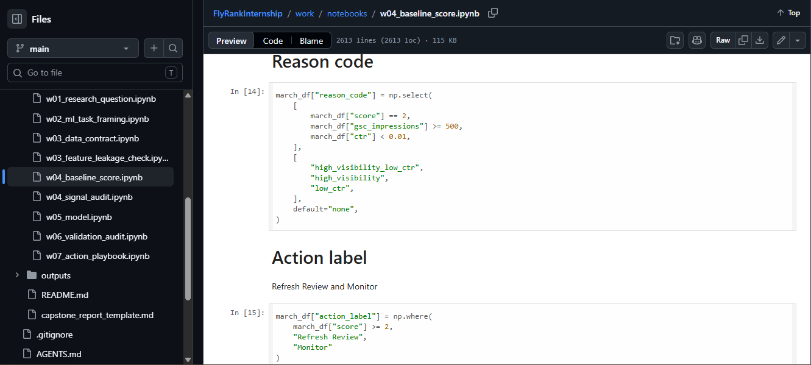
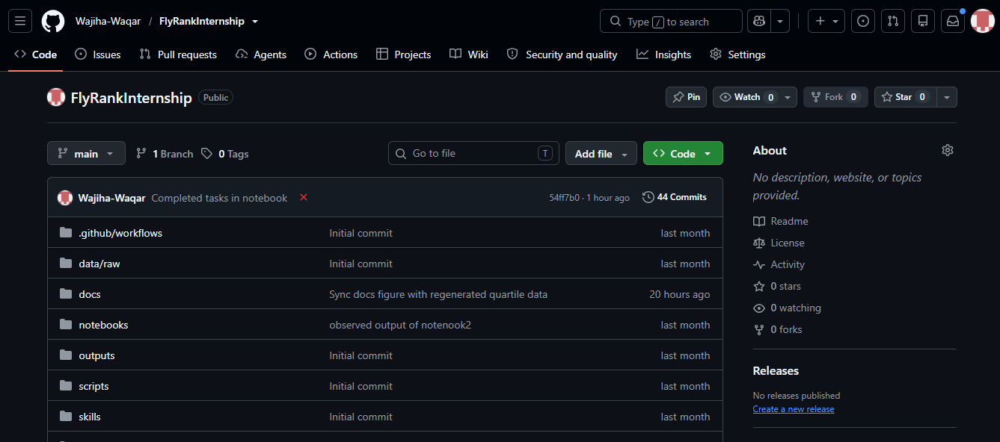

CompletedInternship
FlyRank Search Intelligence Internship
Signal validation • Transparent baseline scoring • Ranked action queues • Decision support
Scope. This page covers the internship work: validating signals, building a transparent baseline, and producing ranked queues for reviewers. The machine-learning model built afterwards is documented in the capstone case study.
Problem
Identify pages that deserve review before applying machine learning. SEO teams manage large numbers of content pages but have limited capacity to update them all, so pages need to be prioritized using search performance signals before any model is built.
What I did
- Signal validation
- Checked the search and engagement signals before any modelling, as a prerequisite to scoring.
- Transparent baseline scoring
- Designed rule-based, explainable scoring rules for pages that may need an SEO refresh, and evaluated the baseline logic as the benchmark any model would have to beat.
- Ranked action queues
- Generated ranked queues of pages for review and reviewed the top-ranked pages.
- Data analysis
- Analysed SEO performance on real warehouse data using Python and DuckDB.
- Decision support
- Framed the outputs as decision support: ranked lists that tell a human reviewer which pages to inspect first.
Tools
DuckDB
Python
Pandas
NumPy
Google Colab
Evidence

Notebook: baseline scoring and signal validation

Project repository on GitHub
Lessons Learned
- Signal validation is essential before model development.
- Transparent rules improve trust and explainability.
- Machine learning should always outperform an understandable baseline.